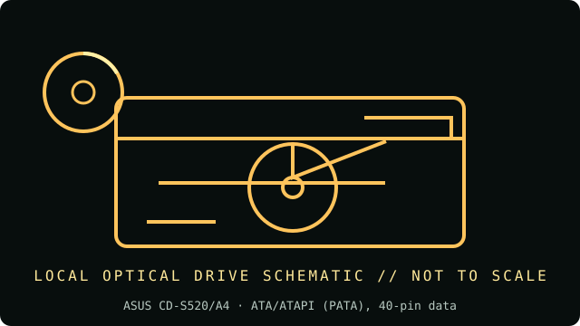

[ INDIVIDUAL COMPONENT // OPTICAL DRIVES ]
ASUS CD-S520/A4
Internal tray-loading 52× CD-ROM reader; it reads recordable CDs but does not write them. Specifications below are tied to the exact model identifiers and cited documentation; nearby product families may differ.

IDENTIFICATION: ASUS CD-S520/A4 · confirm full model/revision marking and compare it with the cited source before assigning a host or media capability.
Verified specifications
| Catalog subcategory | CD-ROM readers |
|---|---|
| Exact product identifier | ASUS CD-S520/A4 |
| Era / product type | Internal 5.25-inch ATAPI CD-ROM reader |
| Read/write and media | CD-ROM read up to 52×; CD-R and CD-RW read support; no recording capability. |
| Interface and mechanics | ATA/ATAPI (PATA), 40-pin data; half-height 5.25-inch bay; tray load; 5 V/12 V drive power. |
| Variant and host cautions | The official ASUS manual is for the CD-S520/A4 family; verify label suffix and firmware. Host must provide legacy IDE/ATAPI and suitable power. This is not a CD-R/RW writer. |
Optical-media preservation notes
For preservation, compare this reader against a second known-good drive when extracting marginal or archival CD-R/RW. Keep original disc condition, drive firmware, read-error log, and image checksums together.
- Handle discs by the edge or center hub; do not write on the data side or add adhesive labels over the recording surface.
- Store in a clean, cool, dry, dark environment in protective cases. Keep original media unmodified and make verified working images for access.
- Retain checksums, drive model/firmware, software, read errors, media type, and acquisition/handling history with each preservation image.
Identification and host checks
- Confirm the complete manufacturer label, model suffix, revision, serial/date code, and supplied bezel, cable, adapter, or bracket before installation.
- The official ASUS manual is for the CD-S520/A4 family; verify label suffix and firmware. Host must provide legacy IDE/ATAPI and suitable power. This is not a CD-R/RW writer.
- For preservation, compare this reader against a second known-good drive when extracting marginal or archival CD-R/RW. Keep original disc condition, drive firmware, read-error log, and image checksums together.
Manufacturer, standards and preservation sources
- ASUS — CD-S520 series manual download page (includes legacy E1808 documentation)Model-specific installation, supported disc types, and interface.
- ASUS — CD-S520/A4 support / manualsManufacturer support page identifying the A4 manual.
- Ecma International — ECMA-130, CD-ROM format standardStandard context for CD-ROM data format.
- NIST — Care and handling of CDs and DVDs: Guide for librarians and archivistsPreservation practice for optical discs; follow applicable media-specific guidance and keep redundant verified copies.
- Library of Congress — Sustainability of Digital FormatsFormat-sustainability reference for planning access, preservation, and migration of digital content.
Manufacturer ratings describe supported media and maximum speeds, not guaranteed read quality from a particular aged disc. Standards and preservation guidance do not certify this drive or a media batch.